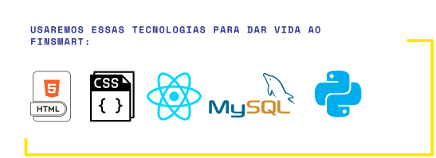

Protótipo e Linguagem



Seu app de controle financeiro
Nascida na periferia de Praia Grande - SP, Deverlyn conhece de perto os desafios enfrentados pela população de baixa renda. Com essa vivência, decidiu criar o FinSmart, um aplicativo que vai além do controle de gastos: é transparente, intuitivo e conta com inteligência artificial para ajudar pessoas comuns a tomarem decisões financeiras melhores, de forma simples e acessível.